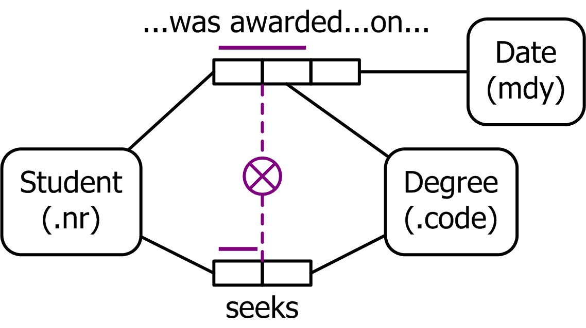
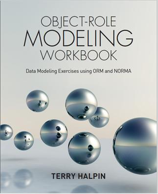
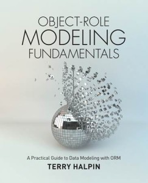
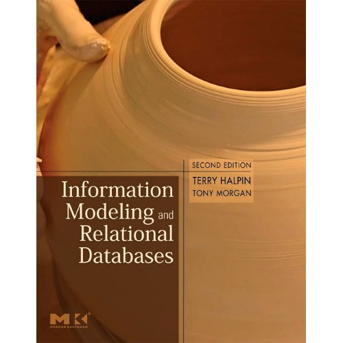

Object Role Modeling (ORM) is a powerful method for designing and querying database models at the conceptual level, where the application is described in terms easily understood by non-technical users. In practice, ORM data models often capture more business rules, and are easier to validate and evolve than data models in other approaches.
This site features a number of technical papers and articles on ORM, as well as other approaches such as the Unified Modeling Language (UML). Permission has been obtained from the relevant publishers to reproduce these publications on this website, and to make them freely downloadable. If you are unfamiliar with ORM, you may want to first review the ORM in Detail section of this site. Details about upcoming courses and conferences, as well as links to websites with additional ORM publications may be found in the Resources section.
The editor
Dr Terry Halpin is the leading authority on Object-Role Modeling (ORM). His academic career included senior lecturer and professor positions in Australia, and professorships in computer science at universities in the USA and Malaysia. His industry experience includes many years in data modeling technology at various companies including Microsoft Corporation. He later worked as a research scientist at LogicBlox, and as a data modeling consultant for the European Space Agency. His research focuses on conceptual modeling and conceptual query technology. Dr Halpin formalized the Object Role Modeling approach and has authored ten books and over 200 technical papers. Visit the rest of this site to explore various conceptual data modeling topics discussed in his publications.
| Thanks for dropping in to the Object Role Modeling Website. In addition to the technical papers on Object Role Modeling and other modeling approaches, you can find details about my book, Information Modeling and Relational Databases, information about other resources, and interviews with the press.
Information on this site will grow with time, so please revisit. If you have any feedback or suggestions, please e-mail me at t.halpin@live.com. |
|||
|
Happy reading! Terry |
To view a PDF file you need to install an additional piece of software called Adobe Acrobat Reader from the Adobe site. |
||
Last updated: 2025 July 14
Recent Updates log: Updated errata file for 3rd edition of Information Modeling and Relational Databases, and author details (this page). Added notice about the passing of Ken Evans (this page). Updated errata file for 3rd edition of Information Modeling and Relational Databases (this page). Added notice about the passing of Ken Evans (this page). Added links to the video of my EROSS-2020 presentation "Reference Scheme Modelling" and the following Q&A session (see Resources page). Added details on 3rd edition of Information Modeling and Relational Databases (this page and Resources page). Updated Errata for Object Role Modeling Fundamentals (this page). Updated ORM2 Graphical Notation glossary: Added further constraints (see Resources page). Added paper "Objectication and Atomicity" (see Modeling Issues page). Updated NORMA_Lab1_new to cater for updates to NORMA and support for Visual Studio 2022 (see Resources page). For old versions of NORMA that work with Visual Studio 2015 or earlier, use the old Norma_Lab1. Added my EROSS-2020 presentation "Reference Scheme Modelling" (see Resources page). Added Dr Tony Morgan as an ORM consultant (see Resources page). Updated book errata for Information Modeling and Relational Databases, 2nd edition (this page). Updated ORM2 Graphical Notation glossary: added examples of inclusive-or and exclusive-or constraints over adjacent roles hosted by the same object type (see Resources page). Updated book errata for Information Modeling and Relational Databases, 2nd edition (this page). Updated ORM2 Graphical Notation glossary: minor updates to Ternary Fact Type and Inclusive-Or Constraint sections (see Resources page). Addded 2 documents on ORM formal syntax and semantics, and links to discussion group, and added an ORM researcher (see Resources page). Added link to my fourteenth article in a series on logical data modeling for the Business Rules Journal (see Resources page). Updated book errata for Information Modeling and Relational Databases, 2nd edition (this page). Updated NORMA Lab1 (see Resources page). --- I regret to advise that Ken Evans (manager of the ORM Foundation website) passed away from cancer. Ken devoted many years to promoting ORM and will be sorely missed. The first printing of the book included some errors, as detailed in the Book Errata. The Data Modeling Zone Australia conference held in Sydney, Australia, May 13-14, 2015, included two presentations on fact-oriented modeling, one by Clifford Heath and one by myself. A link to my presentation is included on the Resources page. For further details about future DMZ conferences, see the Data Modeling Zone website. Microsoft has released Community Editions of Visual Studio 2017, 2019 and 2022 (see http://www.visualstudio.com/products/visual-studio-community-vs) that are free to the public. Free Community Editions of Visual Studio 2103 and 2015 are available at https://visualstudio.microsoft.com/vs/older-downloads/. The NORMA tool is a free plug-in to Visual Studio. The ORM2014 Workshop was held in 2014 in the beautiful town of Bolzano, Italy, with active participation by academic and industrial experts from several countries. The workshop was hosted by the Knowledge Representation and Database group at the Free University of Bozen/Bolzano. The Data Modeling Zone world conference held in Portland, Oregon, October 20-22, 2014, included three presentations on fact-oriented modeling. Two of these were 3 hour workshops, one by Dr Gordon Everest and one by myself, and the other was a one hour presentation by myself. For details of future Data Modeling Zone conferencesm see the Data Modeling Zone website. Links to my series on of artciles on ontology modeling for the Business Rules Journal are now on the Resources page. The 9th International Workshop on Fact-Oriented Modeling (ORM2013) was held September 11-13, 2013 in Graz, Austria in conjunction with the On The Move Conferences. Slides for the presentations are available from the ORM Foundation Library. Slides for presentations from some previous ORM workshops are also available from the ORM Foundation Library. Dr Halpin gave a keynote presentation titled 'Fact-Orientation and Conceptual Logic' at the EDOC2011 Conference in Helsinki on September 1, 2011. A video of the presentation is accessible from a link on the Resouces page. An updated, 6-page summary of the ORM 2 Graphical notation, including examples, is available for download on the Resources page. The Exploring Modeling Methods in Systems Analysis and Design (EMMSAD) series of annual conferences provide a forum to discuss the latest advances in information systems modeling. Details about the EMMSAD conference as well as resources from past EMMSAD presentations may be found here. The Resources page now includes a link to the ActiveFacts toolkit. The Resources page now includes a link to Andy Carver's Website, and a link to a Visio stencil for drawing ORM 2 diagrams that has been significantly upgraded by Andy. The first printing of the book included a number of errors, as detailed in the Book Errata. Any errors in the first printing of the book will be detailed in the Book Errata. NORMA (Natural ORM Architect) is an modeling tool under development that supports the next generation of ORM (ORM 2). Implemented as an open-source plug-in to Microsoft's Visual Studio .NET, NORMA requires either the free Community Edition of Visual Studio (2017, 2019 or 2022) or at least the standard version of Visual Studio (2005, 2008, 2010, 2012, 2013, 2015, 2017, 2019 or 2022). For further details on the ORM 2 graphical notation, see ORM 2 Technical Report 1. A technical preview of NORMA is available on The ORM Foundation as well as SourceForge. Here is an ORM Foundation link to NORMA, and here is a SourceForge link to NORMA. Recent Updates log:

Object-Role Modeling Workbook is aimed mainly at data modleing practitioners, and is a sequel to my previous book "Object-Role Modeling Fundamentals". This book briefly reviews the fundamentals of ORM, and then discusses additional topics such as model reports generation, vocabulary glossaries, relational mapping options, annotated relational schemas, schema optimization, and data modeling patterns. Written in easy-to-understand language, it illustrates each topic with simple examples, and explains how to use the freeware NORMA tool to implement the ideas discussed. The book also includes many practical exercises to promote expertise in the techniques covered, with answers provided to all the exercise questions. The book is available in both print and electronic form from various channels, as well as directly from the Technics Publications website. Anyone who orders the print version of the book from that website can receive a 25% discount by using the coupon code ORMFundamentals.

My previous ORM book published by Technics Publications, titled Object-Role Modeling Fundamentals, is aimed mainly at data modeling practitioners, and provides an up-to-date coverage of the latest enhancements to ORM and its conceptual schema design procedure. The book also includes lab exercises for using the NORMA tool to create ORM schemas and map them to relational database schemas. The book is available in both print and electronic form from various channels, as well as directly from the Technics Publications website. Anyone who orders the print version of the book from that website can receive a 25% discount by using the coupon code ORMFundamentals.

The 2nd edition of Information Modeling and Relational Databases (ISBN: 978-0-12-373568-3) was published on March 1, 2008. This major upgrade of the earlier edition runs to 970 pages and includes loads of new and updated content. Fully updated to ORM 2 and UML 2 and the latest developments in SQL and XML, this book reveals the true power of semantic data modeling (covering ORM, ER, and UML), as well as addressing business process modeling, relational databases, and other modeling topics such as the semantic web. Here is a link to the book on Amazon.
The 3rd edition of Information Modeling and Relational Databases (ISBN: 9780443237904) will be published by the end of July, 2024. For readers familiar with the second edition of this book, the major differences are now summarized. The coverage of ORM, ER, UML, SQL, OWL, and BPMN has been thoroughly updated to cover their latest versions. A significant amount of new material has been added. Various data file formats such as CSV, XML, JSON, YAML, and some other markup languages are now covered, and a more thorough treatment is provided for non-relational databases, especially NoSQL. All previous chapters have been substantially revised, with several topics covered in greater depth. The new content has led to a larger book.
Currently the NORMA software tool supports entry of ORM2 schemas, verbalization of of most constraints, and code generation (for basic constraints) to a variety of DBMSs (including SQL Server, DB2, Oracle, PostgreSQL, and MySQL) as well as class models and XML schema. NORMA is capable of importing ORM schemas entered in Visio for Enterpise Architects, but the diagrams need to be laid out manually. For Part 1 of the specification for automated verbalization in NORMA, see ORM 2 Technical Report 2.
2025 April 24: Added notice about the passing of Ken Evans (this page).
2024 Nov 28: Updated book errata for Information Modeling and Relational Databases, 3rd edition (this page).
2024 Nov 13: Updated book errata for Information Modeling and Relational Databases, 3rd edition (this page).
2024 Nov 6: Updated book errata for Information Modeling and Relational Databases, 3rd edition (this page).
2024 July 12: Added links to the video of my EROSS-2020 presentation "Reference Scheme Modelling" and the following Q&A session (see Resources page).
2024 July 11: Updated Errata for Object Role Modeling Fundamentals(this page).
2024 July 10: Added details on Information Modeling and Relational Databases, 3rd edition (this page).
2023 Oct 10: Added paper "Objectication and Atomicity" (see Modeling Issues page).
2023 Jan 8: Updated NORMA_Lab1_new to remove former slide 2 (see Resources page)and this home page.
2022 Nov 10: Updated NORMA_Lab1_new (see Resources page) and this home page.
2021 Oct 26: Added my EROSS-2020 presentation "Reference Scheme Modelling" (see Resources page).
2020 Oct 1: Added Dr Tony Morgan as an ORM consultant (see Resources page).
2020 April 7: Updated book errata for Information Modeling and Relational Databases, 2nd edition (this page), and updated ORM2 Graphical Notation glossary (inclusive-or and exclusive-or constraint sections -- Resources page).
2020 April 4: Updated book errata for Information Modeling and Relational Databases, 2nd edition (this page).
2020 March 28: Updated ORM2 Graphical Notation glossary: minor updates to Ternary Fact Type and Inclusive-Or Constraint sections (see Resources page).
2020 March 20: Addded 2 documents on ORM formal syntax and semantics, and links to discussion group, and added an ORM researcher (see Resources page).
2019 May 24: Added link to NORMA_Lab1_new explaining how to install and use the new versions of NORMA that work with Visual Studio 2017 and 2019 (Resources page), and added a link to my 14th Logical Modeling article (Resources page).
2019 Jan 27: Updated book errata for Information Modeling and Relational Databases, 2nd edition.
2018 Nov 14: Updated book errata for Information Modeling and Relational Databases, 2nd edition.
2018 Nov 2: Updated details about free Community Editions of Visual Studio.
2018 oct 17: Added links to 12th and 13th Logical Data Modeling articles (Resources page), and updated book errata for Information Modeling and Relational Datbases, 2nd edition (this page).
2018 April 24: Added link to my eleventh Logical Modeling Article (Resources page).
2018 Jan 25: Added links to my tenth Logical Modeling article (Resources page).
2017 July 24: Added links to my seventh and eighth Logical Modeling articles (Resources page).
2016 October 19: Updated book errata for Information Modeling and Relational Databases, 2nd edition.
2016 Aug 31: Updated NORMA Lab 1 (see Resources page).
2016 August 24: Added news of Data Modeling Zone Europe conference, and link to my seventh article on Logical Modeling (Resources page).
2016 March 27: Added a link to my sixth Logical Modeling article (Resources page).
2016 Jan 4: Added book errata for ORM Fundamentals book (this page).
2015 December 27: Added news about, and a link to, ORM Workbook.
2015 October 6: Added links to my latest Logical Modeling articles and my DMZ Australia 2015 presentation (see Resources page).
2015 August 5: Added links to NORMA Labs (Resources page).
2015 April 18: Added news about, and link to, ORM Fundamentals book.
2015 April 2: Added third Logical Modeling article (Resources page).
2015 April 2: Updated book errata.
2014 Dec 31: Updated book errata.
2014 Nov 24: Added note regarding free Visual Studio 2013 Community edition, and added second article on logical data modeling.
2014 Sep 12: Added note regarding Data Modeling Zone Australia 2015 conference (this page and Resources page).
2014 July 31: Added note regarding ORM2014 workshop to be held in Bolzano (this page and Resources page).
2014 June 17: Added note regarding removal of ORM2014 Workshop from OTM2014 (this page and Resources page).
2014 June 4: Updated Call for Papers for the ORM2014 Workshop (this page and Resources page).
2014 May 24: Added first Logical Modeling article (Resources page).
2014 May 1: Updated book errata.
2014 March 26: Added first Call For Papers for the ORM 2014 Workshop.
2014 Feb 24: Added details about Data Modeling Zone 2014.
2013 Dec 19: Added 15th Ontology Modeling article (Resources page). Updated book errata.
2013 Sep 30: Added link to ORM2013 Workshop slide presentations. Added 14th Ontology Modeling article (Resources page). Updated book errata.
2013 May 28: Updated submission deadlines in Final Call for Papers for ORM2013 Workshop (this page and Resources page).
2013 May 20: Updated Final Call for Papers for ORM2013 Workshop (this page and Resources page). Added 13th ontology modeling article (Resources page). Updated book errata.
2013 March 6: Added 12th ontology modeling article (Resources page) and first Call For Papers for the ORM2013 Workshop (this page and Resources page).
2012 Oct 25: Added 11th ontology modeling article, and updated CaseTalk details (Resources page). Added link to the ORM2012 slide presentations (this page and Resources page). Updated book errata.
2012 May 23: Updated Call For Papers (extended deadlines) for the ORM2012 Workshop. Added 10th ontology modeling article (Resources page). Updated book errata.
2012 March 1: Added first Call For Papers for the ORM2012 Workshop.
2011 Dec 27: Added link to EDOC2011 video (Resources page). Added 8th and 9th ontology modeling articles (Resources page). Updated ORM 2 graphical summary (Resources page). Added details on EMMSAD2012 Conference and ORM2011 Workshop. Updated book errata.
2011 Oct 1: Added program for ORM2011 Workshop. Added 7th ontology modeling article (Resources page). Updated book errata.
2011 Mar 17: Added CFP for ORM2011. Added 5th and 6th ontology modeling articles (Resources page). Updated book errata.
2010 Nov 25: Added CFP for EMMSAD2011, link to ORM2010 slides, and 4th ontology modeling article (Resources page). Updated book errata.
2010 July 9: Added a link to the ActiveFacts toolkit (Resouces page).
2010 June 18: Updated INTI International University details to reflect its upgrading to full university status.
2010 June 11: Updated ORM2010 Workshop CFP with extended deadlines etc.
2010 Mar 16: Added ORM 2 Graphical notation summary (Resources page).
2010 Mar 15: Added details of ORM2010 Workshop, and updated details of EMMSAD2010 Conference. Added 3rd ontology modeling article (resources page). Updated errata for information modeling book.
2010 Jan 2: Added details of EMMSAD2010 and link to ORM2009 slides (this page). Added 2nd ontology modeling article, link to Andy Carver, link to upgraded ORM 2 Visio stencil (resources page). Updated Halpin employment details. Updated errata for information modeling book.
ORM Home ORM in Detail Modeling Issues
Conceptual Queries UML and ORM Resources
All diagrams on this site were created with Microsoft Visio.